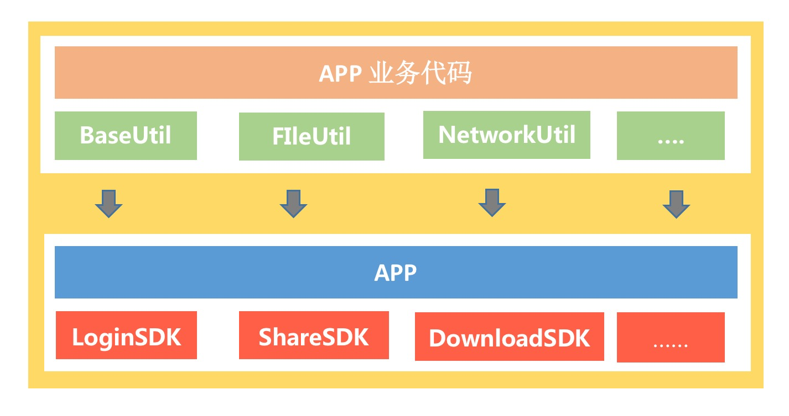
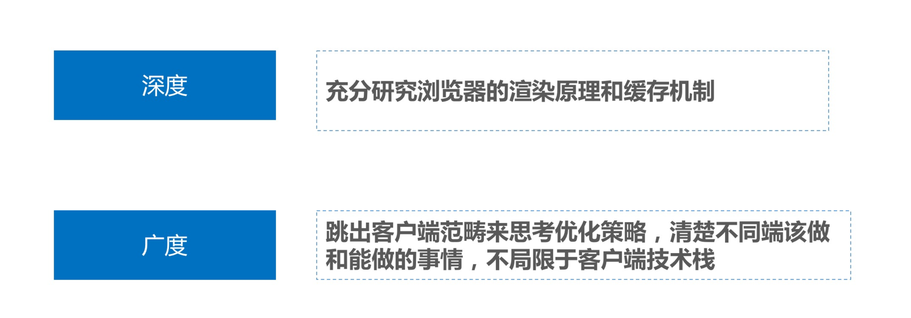
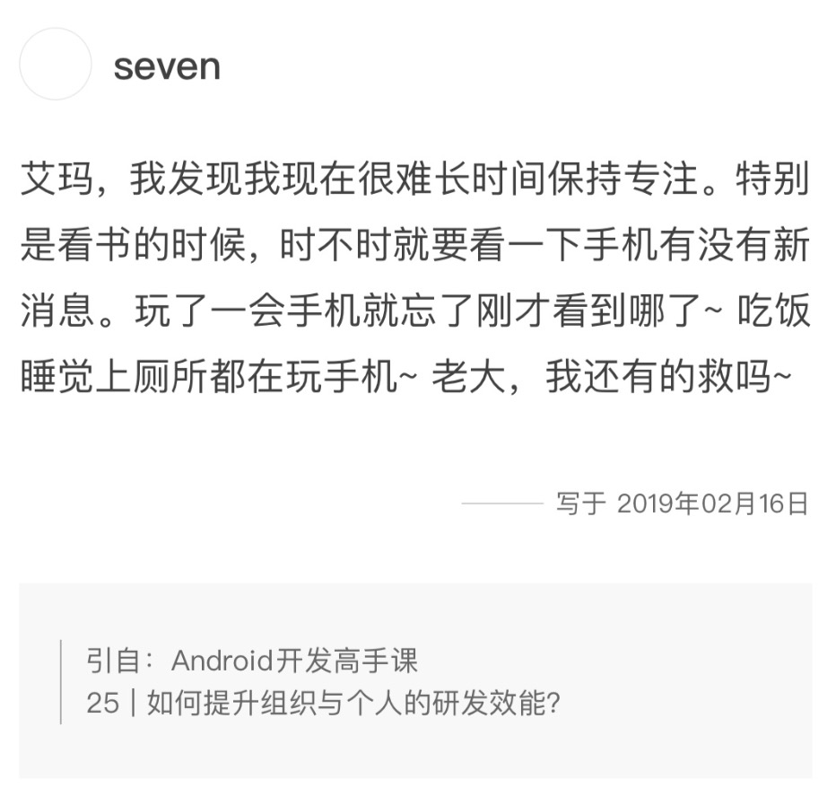

专栏更新至今，不知不觉第二模块“高效开发”也已经更新完了。稳定性、内存、卡顿、I/O、网络，“高质量开发”模块打通了从应用层、Android 系统层、Linux 内核层再到硬件层的优化路径，帮助我们打通“任督二脉”，成为一名 Android 开发高手。
所谓“高效开发”，可以给我们带来了什么呢？移动互联网发展到今天，所有人都说“提质增效”，但是团队效能不是靠我们封装一个工具类或者组件，给其他人低成本复用就够了。持续交付平台、测试平台、发布平台、数据平台、网络平台…我希望你可以跳出客户端的限制，去思考整个产品的研发流程有哪些痛点，不同团队的协作有哪些优化空间，尝试去提升产品的质量和团队的效率。
我们需要的是多想一步，哪怕只是多思考一小步，对自身的成长可能就价值巨大。想要成为一名全面的“开发高手”，不仅要具备系统性解决应用性能和架构问题的攻坚能力，也要有从全局俯视体系和流程的思维能力。这就是我在“高效开发”里希望带给你的思考，希望你可以成为一名“站在高处”的移动开发工程师。
成为有高度的移动开发工程师
在微信的时候，我非常推崇 T 型技术人才理论，所谓的“T”无非就是横向和纵向两个维度。纵向解决的是深度问题，横向解决的是广度问题。
一个有高度的移动开发工程师，需要能纵向深入，也要能横向全面地思考每一个问题。比如说团队希望治理数据的准确性和实时性问题，如果站在客户端的角度上看，就是思考如何去实现一套数据不会丢失、实时性高以及高性能的埋点上报组件。我们知道，这里面的进程模式、存储模型、同步机制等都很复杂，要做一个高可用的上报组件确实需要具备一定的技术深度。
但是如果站在更高的角度上看，你会发现上报组件的优化并不能从根本上解决团队的数据问题。埋点的规范是什么？埋点的流程是什么？产品、研发、数据、测试几个团队对于数据有哪些痛点？我们需要梳理一个埋点从产品定义、客户端埋点开发、测试验证、后端数据处理、数据展示和监控的整个过程。针对团队的数据治理，我们需要体系化的思考每一个点的问题，从更高的角度去全局思考。
那应该如何来提升自己的高度，站在高处去思考问题呢？下面是我的一些思考。
1. 从终端到跨端
在 App 开发最原始的时代，为了实现代码的内部复用，我们封装了各种各样的 Util 工具类。随着移动互联网的发展，应用越来越多也越来越复杂，代码还需要在不同应用中复用。这个时候客户端组件呈现出爆发式增长，例如图片库中的 Glide、Fresco、Picasso，组件化中 Atlas、DroidPlugin、RePlugin 等。

回想一下，因为当时 Android 系统的不成熟和不完善，反而造就了一个百花齐放的移动开发时代。在这个时代里，我们总可以找到很多优化的点，并且持续打磨。随着应用业务复杂性和要求的提升，单纯在客户端的单点优化已经满足不了业务的诉求了，比如在直播、小程序这样的复杂场景。
这个时候我们第一步就要跳出自身客户端的角色限制，从更为全局的角度看问题、思考问题。你需要明白，客户端的实现只是其中一小块内容而已。假如你接到一个提升页面打开速度的任务，极致优化的基础是我们能深入研究浏览器的渲染原理和缓存机制，但是前端和后端能够做些什么，又应该做些什么呢？除此之外，页面哪里产生、如何发布、发布到哪里、如何下载、如何解析、如何渲染、如何衡量和监控页面的性能，这些全部都是我们需要思考的问题。

一方面，在你的项目还没有证明它的价值之前，可能很多公司并不愿意投入很多的人力。这个时候我们只能去包办前后端，就像当年微信的日志平台、APM 平台，记得还是我们用 Tornado 先简单搭建起来。等到这个项目证明了它的价值，才会拉更多的人参与进来。所以这就需要我们具备跨端的能力，目标是解决产品的问题，要知道客户端技术并不是唯一的选择。
另外一方面，针对持续交付平台、测试平台、网络平台、数据平台，很多平台客户端开发者本来就是使用方，我们应该更清楚里面的痛点是什么，有哪些可以改进的地方，所以客户端开发者应该更能主导这些平台的演进。
2. 从平台到中台
正如我上面说到的，组件化只是客户端技术最基本的抽象的体现。怎么理解呢？以性能组件为例，虽然我们收集了应用各个维度的性能数据，但是这些数据在后台如何聚合、如何存储、如何分析、如何报警，我们并没提供解决方案。
每个接入的应用还是要花很大的力气去搭建一整套系统，为了解决这个问题，集成式服务化的建设开始出现，比如以 Google 的 Firebase 为代表的各个开发者平台。为了解决应用不同的场景，我们不断地孵化出不同的服务平台。
移动开发早就已经过了单兵作战的年代了，客户端单点的深耕细作已经不是唯一考量的因素。有没有配套的服务、服务是不是简单易用，这些因素对于开发者来说越来越重要。特别是对于大厂来说，一个公司有几十上百个应用，对于公共业务需要避免重复劳动。国内蚂蚁的 mPaaS、阿里云的 EMAS 移动开发者平台，都是遵循这样的服务化思路。
但是平台化是不是就是服务的最终形态呢？你有没有体验过这种的痛苦：一个新应用需要接入公司内部十几个不同的平台，它们的账号信息、注册信息都相互独立，很多功能我们还需要单独去跟每个平台联调测试。为了解决各个平台的割裂，在平台化的基础上，又提出了中台化的思路。
什么是中台呢？简单的理解就是把这些分散的平台又统一为一个超大的平台。有人会想我们是不是在开历史的倒车？还记得当年我们将一个庞大的系统分拆成各个子平台是多么的艰难。事实上，这里中台的“统一”，更多是面向开发者层面的，例如都使用同一个账号、不需要重复注册、平台之间互相闭环等。
关于中台的更多资料，你可以参考《从平台到中台【上】》和《从平台到中台【下】》。在国内，阿里的中台是做得最好的。当然腾讯、头条这些公司也都意识到了它的重要性，最近都在积极调整组织架构，成立了专门的中台部门。但是无论是中台还是平台，都是靠无数大大小小的优化点堆积起来得，它们都需要慢慢地积累，很难在非常短的时间内建设得非常完善。
热点问题答疑
针对高效开发，我全面介绍了目前各大公司的做法和思路。对于持续交付、测试、发布、数据、网络、日志，它们本身涉及的知识是十分庞大的，所以就正如高质量开发一样，即使专栏的内容不能完全理解，也大可不必焦虑，可以反复多读几次专栏的文章和扩展的参考资料，相信你每次学习都会有不同的收获。
你可以按照自己的节奏持续地学习下去，这样我相信无论是对你的视野还是对移动开发的理解，都会有很大的收获。但是在向提升高度的方向迈进时，我们或多或少都会有一些疑问，下面我就挑选几个比较重要的问题，和你进一步聊聊我的看法。
1. 如何提升个人的专注力和效率？

人的大脑就像 CPU 一样，如果频繁切换进程和线程，这个代价是非常大的。一会看一下微信，一会刷一下抖音，一会看一下头条，当我们重新切换回工作线程的时候，起码需要几分钟才能重新进入状态。
那靠个人的自制力能不能解决这个问题？能，但是非常遗憾的是大部分人都没有这个能力，或者说自制力不够强大。不要给自己被诱惑的机会，因为大部分人都无法承受诱惑。我的建议是，直接卸载掉这些可能影响我们工作的软件（微信可能卸载不了，这也是它强大的地方，笑）。
2. 个人发展与公司平台的关系
可能 DebugCat 同学的疑问你也会有共鸣，我每天的工作就是写写界面、调调动画，面对的都是无休无止的业务，你讲的这些东西虽然高大上，但是并没有机会接触到。
对于小型团队来说，更多的是拿来主义，去使用一些第三方的平台。对于大型团队来说，可能你才有机会真正参与到这些平台的开发。但是也有人说在小型团队可以独当一面，但在大厂只能做一颗小小的螺丝钉。
我相信业务和团队这些限制因素的确客观存在，而且对我们的影响的确巨大。但是这并不是决定性的因素，你要问问自己有没有真的去努力。
如果你在大厂，就应该从客户端到后端，尽可能全面深入研究你参与的模块，多想想如何把你所做的模块优化到极致，并且在巨大的用户量面前依然能够稳定运行。如果你在初创团队，在业余时间也要坚持学习，持续探索自己的技术深度。这样在将来，无论是初创团队内部的晋升，还是跳到大厂，这样努力的经验都可以成为未来无数次面试、加薪的一大亮点。
总结
移动开发工程师想要真正站在高处，既需要有技术深度，又要有广度。很明显你下一个问题是：应该先钻研深度，还是扩展广度呢？
我建议你应该至少先在一个技术领域付出大量的精力，深入钻研透彻，然后再去思考广度的问题。这是因为经验丰富的程序员学新的东西都非常快，因为现在已经不那么容易出现太多全新的技术，所谓的新技术其实都是旧技术的重新组合和微创新。
成长是没有捷径的，我发现技术圈也有部分人喜欢在论坛写写文章或者出去授课，在业界可能还小有名气，受到不少人追捧。但是只要真正去大厂面试，可能就会被打回原形。我推荐你看看这篇文章，这里把里面的一句话推荐给你：
老老实实看书，踏踏实实做事儿，早日兑现自己曾经吹过的牛逼。
“金三银四”，最近也是找工作的高峰期。从很多同学的面试经历来看，现在只会单纯写业务代码的人找工作特别难，比如很多大厂的面试官都会针对性能优化的细节，考察你是否真正搞懂底层的机制和原理。环境的要求越来越高，所以我们也要积极转变，踏踏实实的学习。最后我也推荐你看看《程序员成长路线》，希望今天讲的这些“大道理”对你有所启发。
COMMUNITY NOTES
读者评论
今年上半年的OKR之一是深入学习《Android开发高手课》🤦♀️
不能同意更多，我已经分享你的专栏第三次了😄，本人89年生人，呆过10亿+美元市值的二线互联网公司，现在在微信相关领域参与创业，负责可能是东半球最好的第三方微信客户端的开发(因为涉及到xposed相关生态，你懂的😂，不能说太多)，自认为技术还行，去年面试了QQ音乐高级工程师，面试官第一个问题就是Binder机制，从头到尾理一遍，不幸被淘汰了😓，订阅这个专栏，涨了不少见识，原来微信是这么玩的，原来研究的这么深入了。
感谢老大解惑，马上也面临3年的节点，在组内的确感觉业务开发也能游刃有余，广度上也还行，但很少静下心来去钻研...也很少主动和外部环境交流，希望今年能“走出去”，摆脱“自嗨”，正视差距。加油💪！
听君一席话胜吃十年饭。
请问张老师Systrace在Windows上是否不支持，在Mac上可以用，但换Windows就报错，google一番好像说是known issue!
张老师，持续交付平台和发布平台你这里的定义有什么区别？我的理解是差不多的东西。